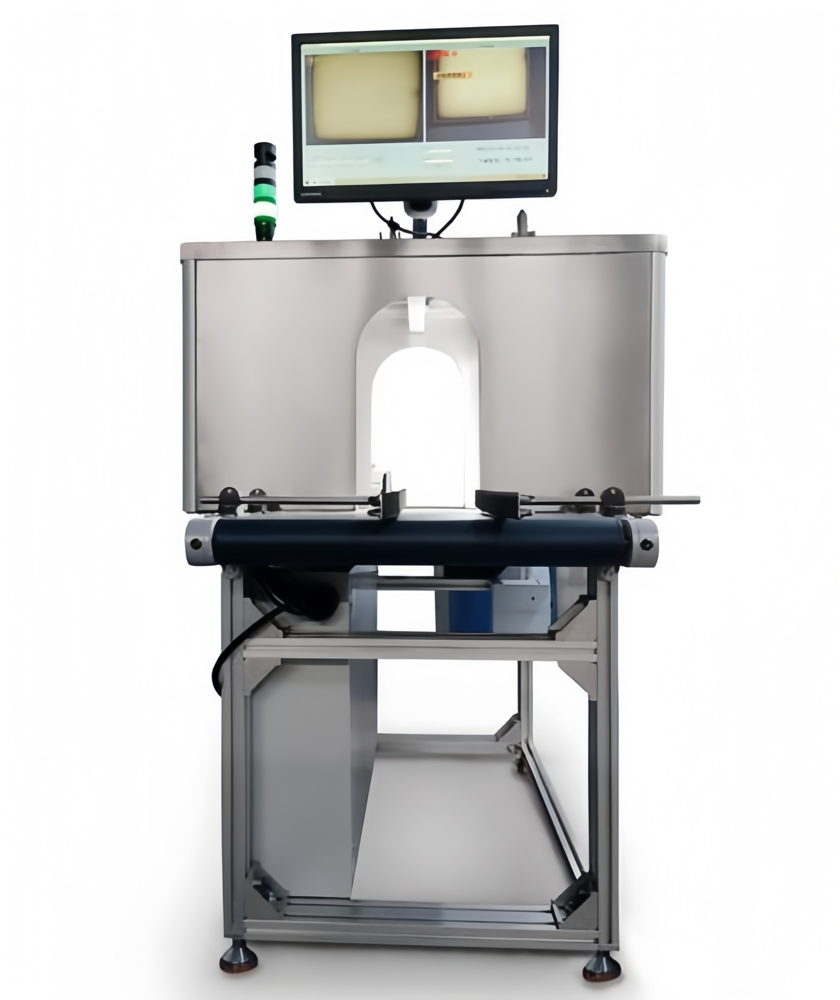

SKU: SAL-M-24
Vision Inspection Machine
| Sub-Category | Spices Processing |
| Model | VI-500 |
| Material | Aluminum Frame with SS Cover |
| Brand | KMG |
Vision Inspection Machine plays an important role in maintaining product quality through advanced camera systems and intelligent software. It continuously monitors production lines and detects defects, missing components, or incorrect labeling in real time. This improves accuracy, reduces human error, and ensures that only high-quality products move forward in the process. System can be customized for different inspection requirements and production speeds. It also helps maintain industry standards and improves overall brand reliability.
Rate this product:
Click a star to submit your review